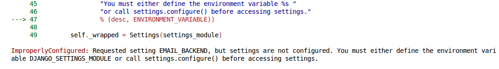
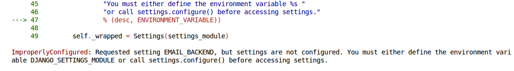

Django Unsetting'd
What is the unsettings project?
An effort to change project-wide settings
FROM
a globally incorporated single entity
(ie, django.conf.settings)
(ie, django.conf.settings)
TO
a set of individually injected objects, configurable with a diverse and flexible variety of patterns.
 

- Remove burdensome import logic
- Signal to python community: "We are you."
- Signal to new django contributers: Your work belongs here, and it won't be locked away behind our configuration drama.
Why unsettings?
- 1) custom auth.User shows that Django cares about its people.
- 2) migrations shows that Django cares about its people's right to change our mind.
- 3) unsettings shows that the Django tribe does not treat its project as an apache plugin
The third and final step in Django's puberty.
but as feature-rich python subculture.
The current state of unsettings
What you can do
- justin@justinholmes.com
- github.com/jMyles
- github.com/jMyles/wheelman